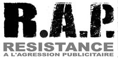

| |
Site dédié à la publication d'informations communiquées par le Collectif des déboulonneurs. En aucun cas ce site n'appelle à des actions illégales. | |
 |
||
|
Accueil du site > Paris > Festiv’halte aux écrans publicitaires le 26 avril 2014 à Paris
Communiqué de presse - Vendredi 11 avril 2014 En réponse à l’appel à mobilisation nationale contre les écrans publicitaires le 26 avril cosigné par 15 associations, Résistance à l’agression publicitaire (R.A.P.), les Reposeurs et le collectif des Déboulonneurs organisent une journée de mobilisations à Paris.  Programme de la journée du Festiv’halte aux écrans publicitaires, samedi 26 avril :
* Gare Montparnasse : place Raoul Dautry proche du kiosque théâtre ;
En France, le Grenelle 2 a officialisé et assoupli la réglementation encadrant les écrans publicitaires. Leur taille peut aller jusqu’à 50 m2. Le gouvernement Valls réouvrira d’ici peu le dossier catastrophique du Grenelle du paysage dans le cadre d’une loi sur la biodiversité. Pour nous, la lutte contre les écrans publicitaires numériques est primordiale. Ces écrans constituent une triple pollution :
Les afficheurs, avec la complicité bienveillante des politiques, cherchent à nous placer devant le fait accompli. Dans le métro parisien, si la tentative d’équiper les écrans de capteurs Bluetooth a été officiellement abandonnée, le projet d’activer les caméras pour analyser les passants est en revanche toujours d’actualité. Médiatransport, la régie de la SNCF et de la RATP attend que les citoyennes et citoyens soient habitués aux écrans pour activer les caméras de surveillance publicitaire déjà présentes dans les écrans. Ces expérimentations parisiennes ne sont que le début d’un déploiement national. Ces écrans s’ajoutent partout aux dispositifs existants, constituant une véritable invasion publicitaire. Saturant nos champs de vision, défigurant nos espaces de vie. Il est important de réagir maintenant, avant qu’ils ne soient installés en masse, et que le mal ne soit fait. Contacts presse :

|
{kind=link}
{kind=link}
|
Site utilisant SPIP - Hébergement Ouvaton
|